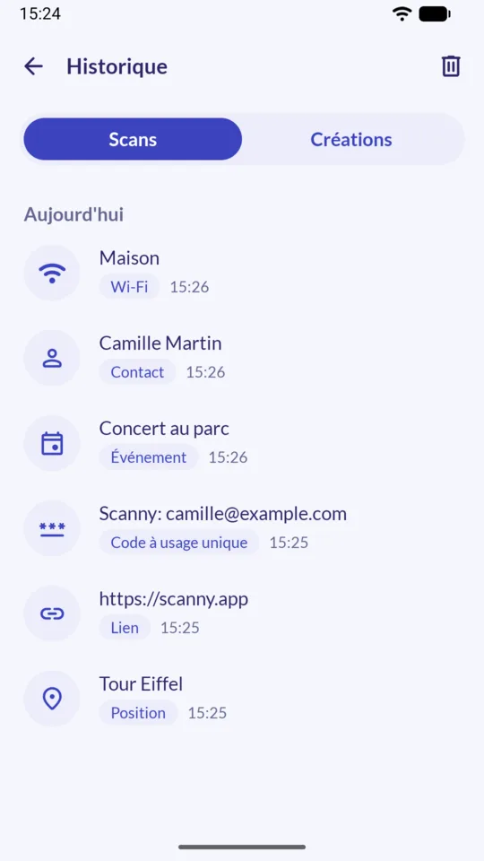
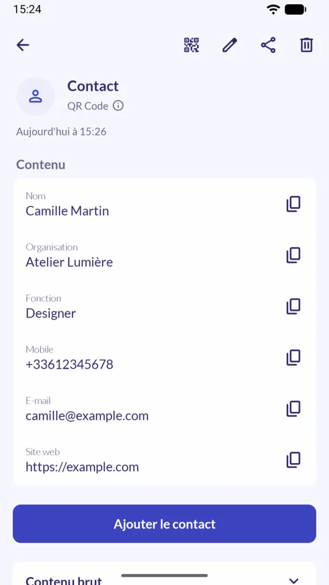
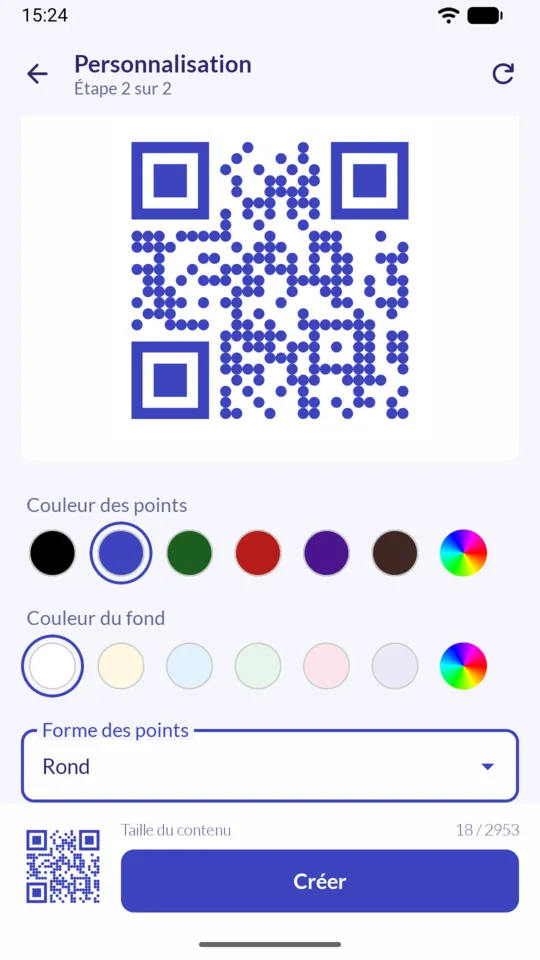

Scanner
À la caméra, un code ou plusieurs à la fois, ou depuis une image de la galerie. 13 formats, du QR Code et du Data Matrix à l'EAN-13 et au Code 128.
Scanny lit ce que contient un code, champ par champ, et propose l'action qui va avec.
À la caméra, un code ou plusieurs à la fois, ou depuis une image de la galerie. 13 formats, du QR Code et du Data Matrix à l'EAN-13 et au Code 128.
Ouvrir un lien, rejoindre un réseau Wi-Fi, ajouter un contact ou un événement, écrire un e-mail, voir un lieu sur la carte, ajouter un mot de passe à usage unique à son authentificateur.
QR codes, Data Matrix, codes Aztec, PDF417 et codes-barres, dessinés pendant la saisie. Couleurs, dégradé, formes et logo pour vos QR codes, à partager ou enregistrer en image.
Vos scans et vos créations, gardés aussi longtemps que vous le choisissez, vos favoris en tête. Chaque code redessiné, prêt à être partagé ou enregistré.
Scanny s'ouvre directement sur la caméra. Tout le reste est à portée de doigt.



Aucune publicité, aucun compte, aucun pistage. Votre historique ne quitte jamais votre téléphone. Scanny est open source : chacun peut vérifier ce qu'il fait.
Lire la politique de confidentialité